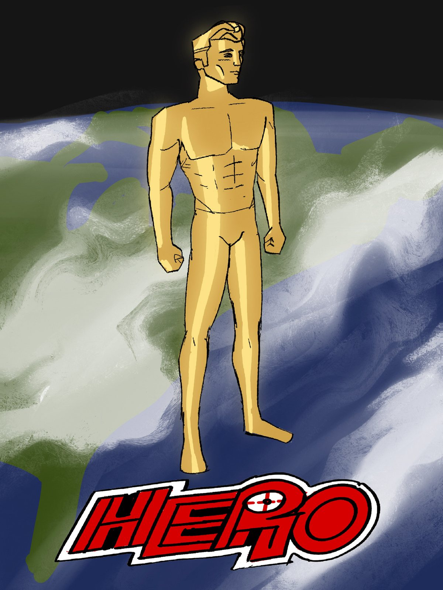
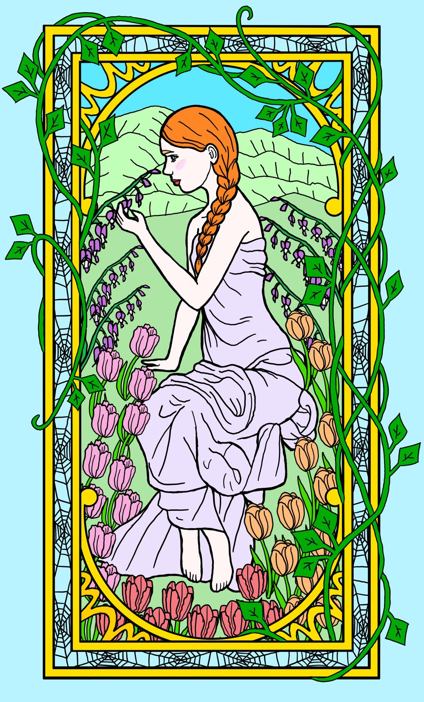
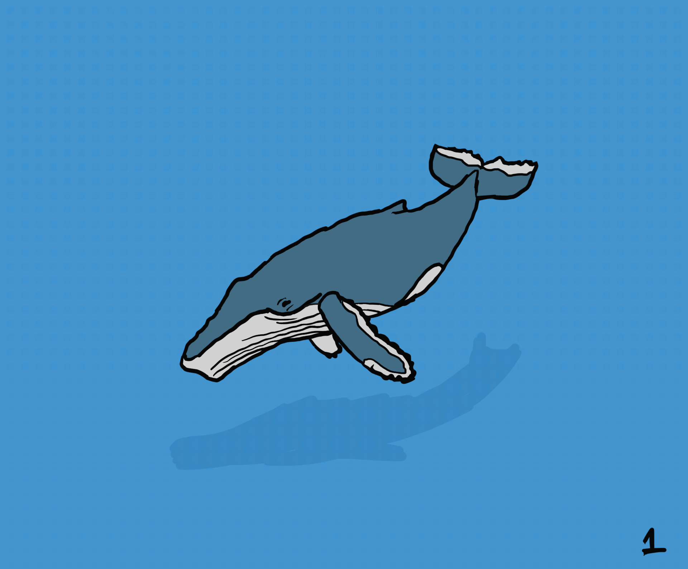
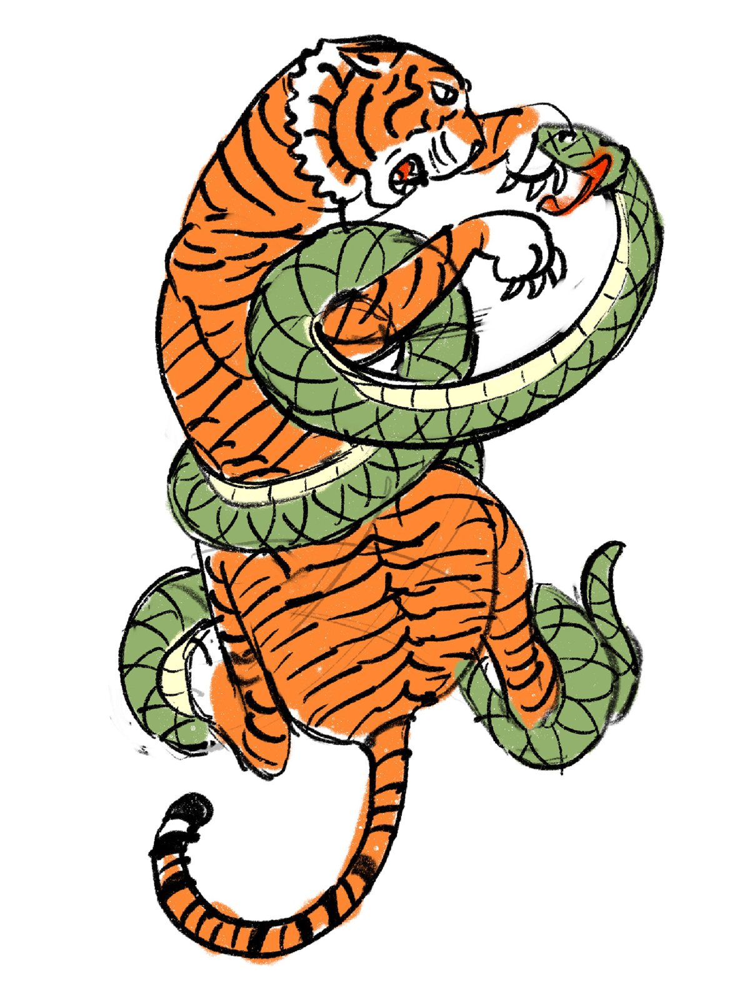
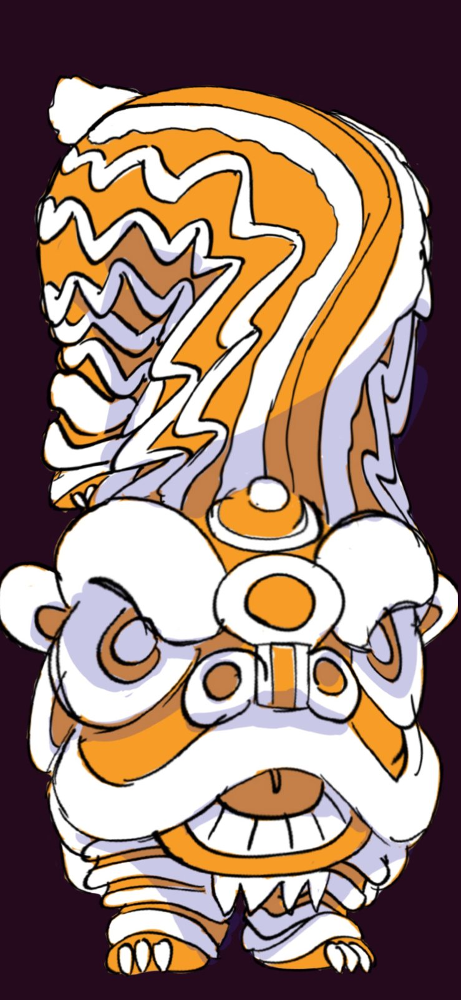
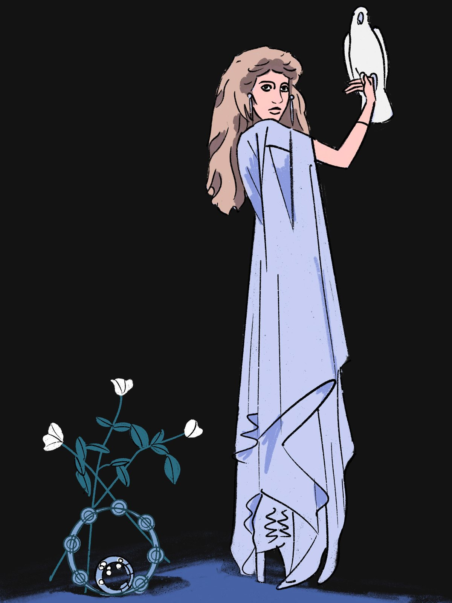
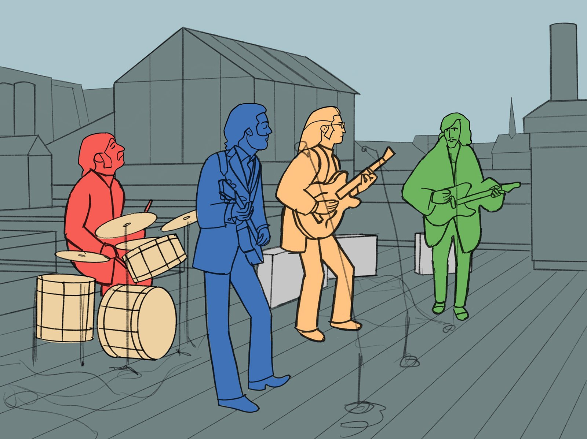

Other Personal Work
Pieces I made just because I wanted to: an animation test, a redrawn masterpiece, designs built around tradition, and a few ideas about power and myth.

HERO
A golden, statue-like man standing over the Earth above a comic book logo that reads HERO. It's about how America likes to see itself as the world's hero, and how that image stands on top of the rest of the planet.

Creation, Redrawn
My redrawing of Michelangelo's The Creation of Adam from the Sistine Chapel ceiling, in clean lines and soft flat color. Copying a masterwork piece by piece is one of the best ways I know to learn composition and anatomy.

Wisteria
A young woman in a lilac dress among tulips and wisteria, inside a stained-glass style border. It's my take on Art Nouveau posters, where the frame is as much a part of the design as the figure.

Whale
An eight-frame looping swim cycle of a humpback whale gliding through open blue water, with its shadow drifting below. I drew each frame by hand and numbered them in the corner. It was a test in making something huge move slowly and heavily.

Tiger and Snake
A tiger locked in a fight with a snake, in a bold traditional tattoo style. The two animals wrap around each other so tightly that they read as one shape.

Lion Dance
A lion dance costume drawn in orange, white, and purple, with its patterns stacked like flames. Lion dance is a Chinese tradition for luck and celebration, and I loved designing around its shapes.

Woman with Dove
A woman in long pale robes holding a white dove, beside white flowers climbing through a ring of beads with a glass orb at its base. I drew it like a symbolic painting, where each object is there to stand for something.

Rooftop Concert
A four-piece band playing on a rooftop, each musician in a different flat color against gray buildings. I like how color alone tells the players apart.